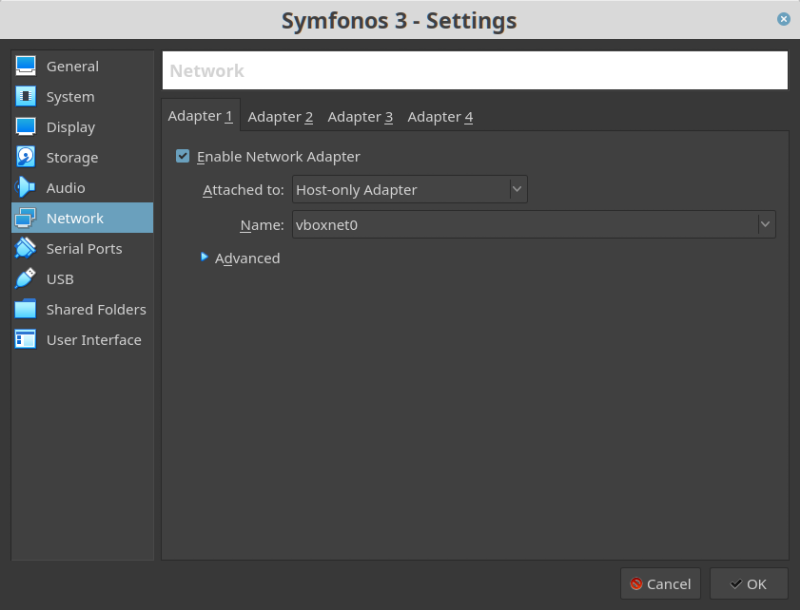
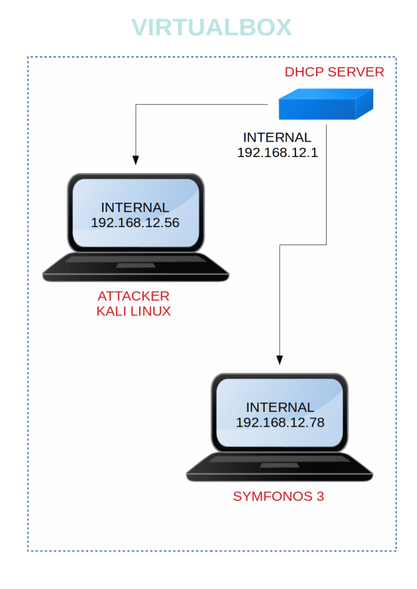

Symfonos 3
▸ Symfonos 3
▸ 1. Scan Network
▸ 2. Finding Services and Ports
▸ 3. Enumerate
▸ 4. Exploitation
▸ 4.1 Metasploit
▸ 4.2 pspy2 – Unprivileged Linux Process Snooping
▸ 4.3 Log in with SSH
▸ 5. Privilege Escalation
▸ 5.1 Netcat conection
▸ 6. Catchin the flag
NOTE: This machine is the second version of Symfonos 3.
Difficulty: Intermediate.
Flag: 1 flag.
Learning:
• Netdiscover
• Nmap
• Web Directory Search
• Metasploit
• Netcat
• Exploiting Writable rights
• Download: https://zayotic.s3.amazonaws.com/vm/symfonos3.7z
• Download (Mirror): https://download.vulnhub.com/symfonos/symfonos3v2.7z
• Download (Torrent): https://download.vulnhub.com/symfonos/symfonos3v2.7z.torrent
Install the machine on VirtualBox:
1. Download the file and extract it.
2. On Virtualbox choose File->Import Appliance.
3. Select the file “ovf”.
4. Accept to import.


Watch your Machine IP.
Output:

Diagram
 Index
Index